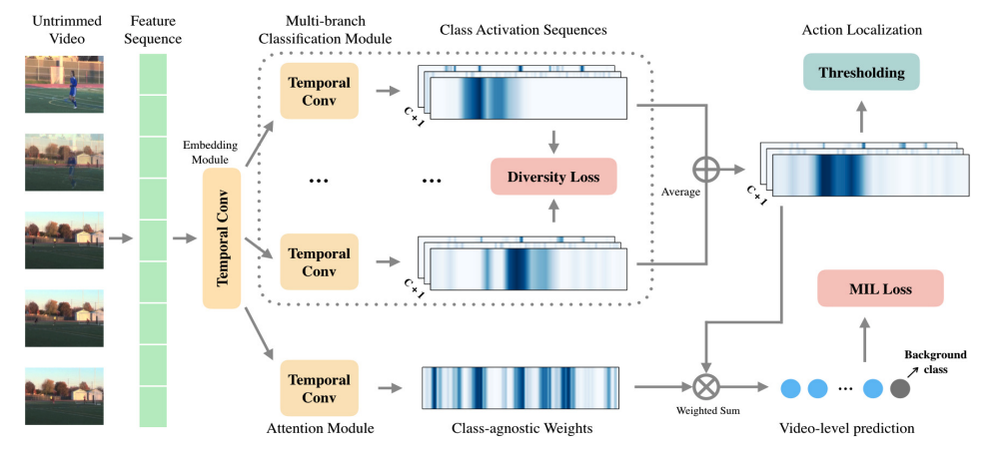

Completeness Modeling and Context Separation for Weakly Supervised Temporal Action Localization

Publication
In CVPR 2019
概要
動画のクラスラベルのみのWeaklyなラベルを用いたTemporal Action Localization.
Weaklyなラベルによる難点
Weaklyなラベルによる難点は主に２つあり，解決するための手法を提案。
⓵ Action completeness modeling
下図の上部参照。 例えばPKでは選手がシュートする動きとボールが飛んでいく動きによって構成されるが，Weaklyでは動画のクラス分類を元に解くのでより分類において重要であるシュートのところのみ切り取られやすい。そこでこれらの行動を分けて予測するようなマルチブランチのネットワーク構造にする。
⓶ Action-context separation
下図の下部参照。行動の前景と背景ではフレーム全体としてのContextはあまり変わらない（どちらにもビリヤード台はずっと写ってる）。これに関しては人物や物の情報がアクションには関わっていると仮定し，OpticalFlowを用いた解決法を提案。

手法

マルチブランチネットワークとアテンションモデルによって構成。マルチブランチNetworkではアクションをK分割して，それぞれの集合（Averageをとる）として求める全体のアクションを得るといった考え方。K分割したブランチにおいてそれぞれで違う部分に注目してもらう必要があるため，DiversityLossを採用。アテンションモデルでは時系列方向にSoftmaxをかけてフレームの重要度を算出。最後にこれらをかけあわせ，動画単位での MILLossをとる。
推論時はマルチブランチをAverageした結果を利用。
実験


新規性
マルチブランチによる推定。